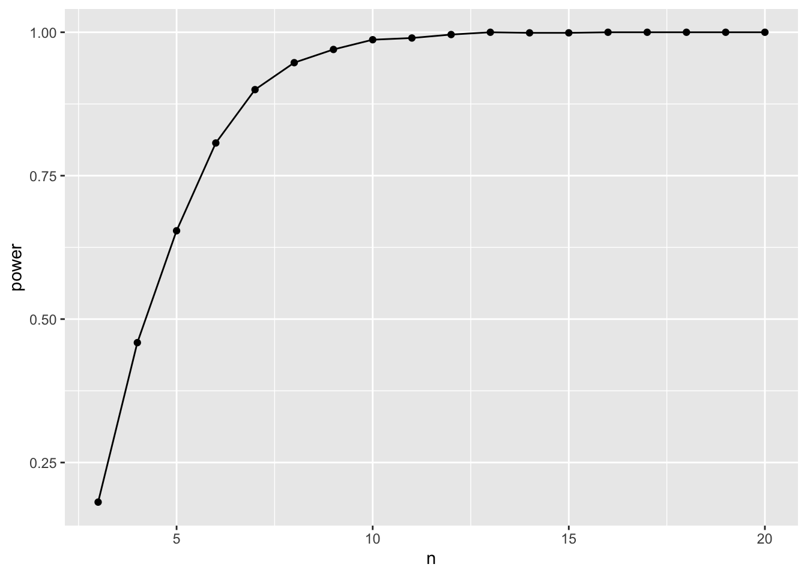
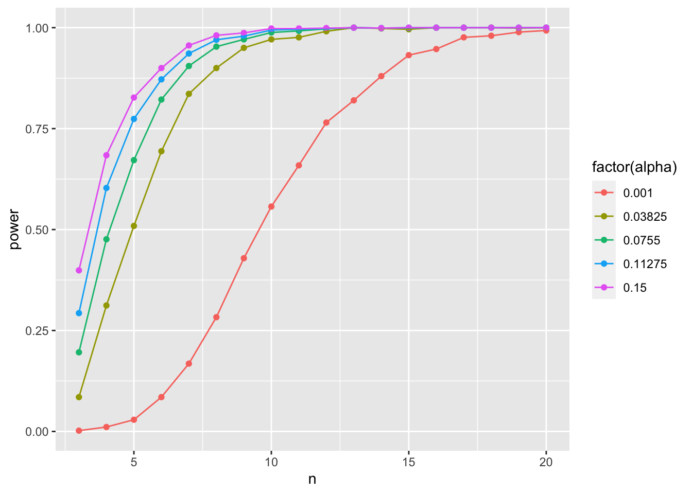
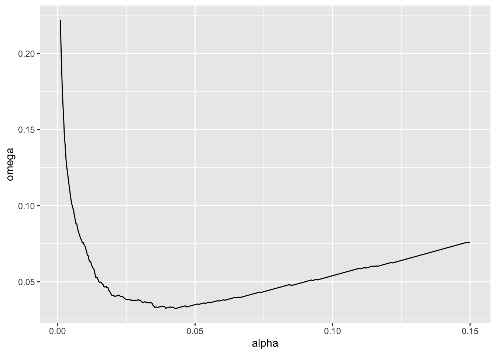
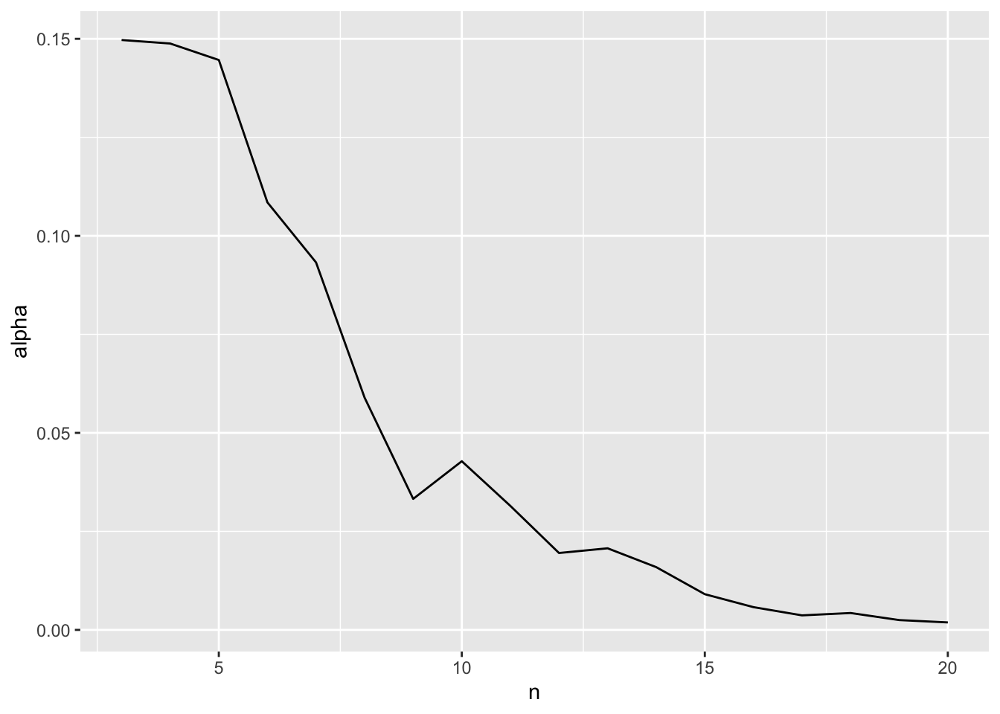

library(dplyr) #for a tidy workflow
library(purrr) #for simulation
library(broom) #for tidy stats tables
library(ggplot2) #plots!Power Analysis
1. A Model of the World
All power analyses start with you having to envision how the world works. Let’s say we have a simple example - we’re estimating the power of a linear regression where the True Slope is 3, the intercept is 0, and the residual SD is 5. For the sake of argument, we’ll say that we are sampling randomly with values of x coming from a random uniform with min of 0 and max of 10.
I want you to note just how many things we can tweak. We’re going to focus on sample size - n - but, wow. We could look at how slope, SD, intercept, min value, max value, or even sampling design (we could simulate from a uniform, stratified uniform, or other) all affect power. You can really get lost here! But it’s worth thinking about as you plan!
But it’s all about simulation! So let’s start with a few libraries
2. A Function to Represent our Analysis
We’ll then turn this model of the world where sample size can vary into a function. In the function, for the sake of simplicity, we’ll simulate data, then fit a model, and then extract a p-value. As this is a simple regression, we’ll just look at the coefficient p-value, but we could extract it from an F-test, a comparison of means, anything! This is a simple example, but the sky is the limit.
Here’s an outline of our function with arguments.
get_p <- function(n,
slope = 3, intercept = 0,
resid_sd = 5, min_x = 0, max_x = 10){
# simulate data
# fit a model
# get a coefficient table
# report back with p!
}We can fill out each of these steps one by one. First, simulating data.
get_p <- function(n,
slope = 3, intercept = 0,
resid_sd = 5, min_x = 0, max_x = 10){
# simulate data
dat <- tibble(x = runif(n, min_x, max_x),
y = rnorm(n, intercept + slope*x, sd = resid_sd))
# fit a model
# get a coefficient table
# report back with p!
}Then we can fit the model.
get_p <- function(n,
slope = 3, intercept = 0,
resid_sd = 5, min_x = 0, max_x = 10){
# simulate data
dat <- tibble(x = runif(n, min_x, max_x),
y = rnorm(n, intercept + slope*x, sd = resid_sd))
# fit a model
mod <- lm(y ~ x, data = dat)
# get a coefficient table
# report back with p!
}Get a coefficient table.
get_p <- function(n,
slope = 3, intercept = 0,
resid_sd = 5, min_x = 0, max_x = 10){
# simulate data
dat <- tibble(x = runif(n, min_x, max_x),
y = rnorm(n, intercept + slope*x, sd = resid_sd))
# fit a model
mod <- lm(y ~ x, data = dat)
# get a coefficient table
ctab <- tidy(mod)
# report back with p!
}And finally, as this is a linear model, the slope p-value from broom::tidy() will be in a column called p.value and it will be the second value, so…
get_p <- function(n,
slope = 3, intercept = 0,
resid_sd = 5, min_x = 0, max_x = 10){
# simulate data
dat <- tibble(x = runif(n, min_x, max_x),
y = rnorm(n, intercept + slope*x, sd = resid_sd))
# fit a model
mod <- lm(y ~ x, data = dat)
# get a coefficient table
ctab <- tidy(mod)
# report back with p!
ctab$p.value[2]
}
get_p(3)[1] 0.3228941Hey! It works! I think!
If you can write this function, though, you have grokked the core of what we need to do in order to run a power analysis. Everything else is just iteration and trying out different values. You could also have returned more output from this - the slope AND intercept AND their p-values, whole coefficient tables, whatever! But, for a simple power analysis, this is all we need.
3. Iteration
OK, we’re going to try a lot of sample sizes. Let’s say we have 1000 simulations for every sample size from 3 to 20. This is just a dplyr workflow where we create a tibble or data frame with a column for sample size, group by sample size, and them use summarize and map_dbl to get a new column of p-values.
p_tibble <- tibble(n = 3:20) |>
group_by(n) |>
summarize(p = map_dbl(1:1000, ~get_p(n)))
p_tibble# A tibble: 18,000 × 2
# Groups: n [18]
n p
<int> <dbl>
1 3 0.711
2 3 0.365
3 3 0.393
4 3 0.200
5 3 0.338
6 3 0.128
7 3 0.122
8 3 0.00123
9 3 0.518
10 3 0.421
# … with 17,990 more rowsGreat! And it’s still grouped! We can now use that, and for each sample size, calculate a false positive rate (which is \(\beta\)) and power given a pre-selected \(\alpha\). Let’s go with 0.07 for funsies.
power_tibble <- p_tibble |>
summarize(beta = sum(p > 0.07)/n(),
power = 1-beta)
ggplot(data = power_tibble,
mapping = aes(x = n, y = power)) +
geom_point() +
geom_line()
So, a sample size if about 6 should be adequate.
3. Playing with Alpha
So, how does \(\alpha\) influence things here? We can actualy look at that by not using a fixed alpha, but instead, try a few! Here we can use tidyr::crossing() to good effect.
library(tidyr)
power_tibble_alpha <- p_tibble |>
crossing(tibble(alpha = seq(0.001, 0.15, length.out = 5))) |>
group_by(n, alpha) |>
summarize(beta = sum(p > alpha)/n(),
power = 1-beta)
ggplot(data = power_tibble_alpha,
mapping = aes(x = n, y = power, color = factor(alpha))) +
geom_point() +
geom_line()
As you increase alpha, your power goes down and you need a higher sample size to achieve comparable power!
4. Mudge’s Optimal Alpha
We can actually use that approach to calculate Mudge’s Optimal Alpha. Let’s assume there is an equal cost to a type I versus type II error (a good call in many studies!). We can use the approach above to calculate \(\omega = (\alpha + \beta)/2\) and then find the value of \(\alpha\) at the minimum of \(\omega\). And we can do this for different sample sizes. Let’s go with 10.
mudge <- p_tibble |>
crossing(tibble(alpha = seq(0.001, 0.15, length.out = 500))) |>
group_by(n, alpha) |>
summarize(beta = sum(p > alpha)/n())|>
mutate(omega = (alpha + beta)/2,
power = 1-beta)
ggplot(data = mudge |> filter(n == 10),
mapping = aes(x = alpha, y = omega)) +
geom_line()
mudge |>
ungroup() |>
filter(n == 10) |>
filter(omega == min(omega))# A tibble: 1 × 5
n alpha beta omega power
<int> <dbl> <dbl> <dbl> <dbl>
1 10 0.0428 0.022 0.0324 0.978We can even look at how the optimal alpha will change by sample size
opt_alpha <- mudge |>
filter(omega == min(omega))
ggplot(data = opt_alpha,
mapping = aes(x = n, y = alpha)) +
geom_line()
Neat!
5. Example
Let’s say we have a simple experiment - we have three groups, A, B, and C. The true value of y for each group is 1, 3, and 5, respectively, with a residual standard deviation of 2. Note, to replicate treatments, rep(c("A", "B", "C"), n) should do! Similarly, use a vector for means to a normal distribution when simulating y.
If alpha = 0.05, what’s the optimal sample size to achieve a power of 0.8 for an F test?
If alpha = 0.05, what’s the optimal sample size to achieve a power of 0.8 for a comparison of group B to C?
What is the optimal alpha for an F test with a sample size of 12?